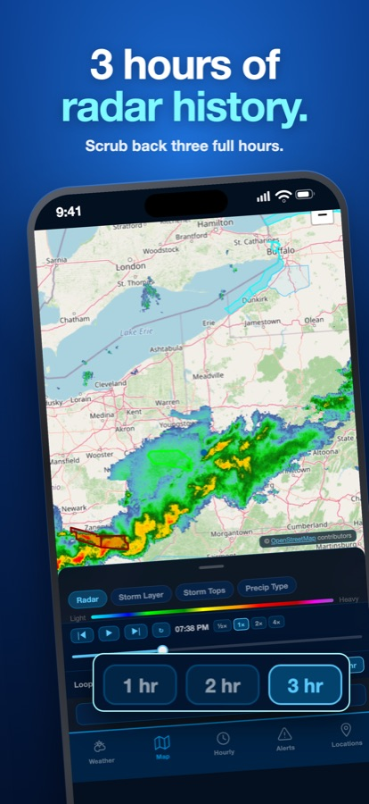
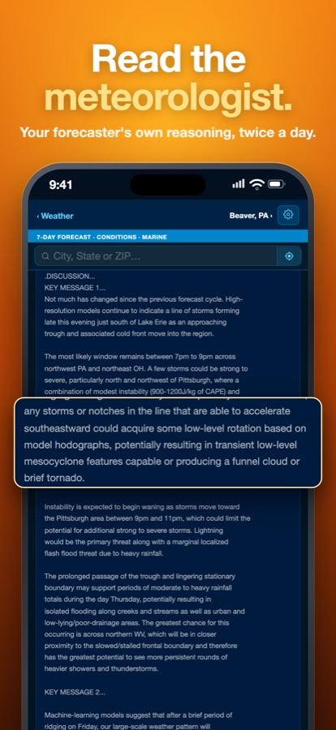
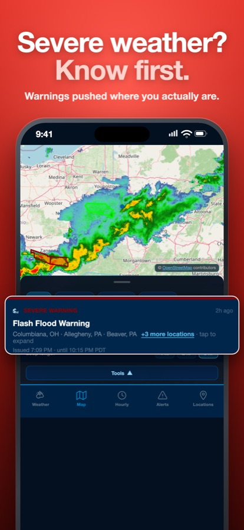
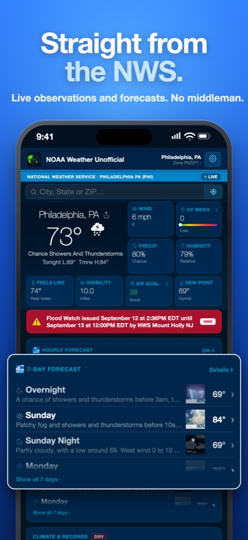
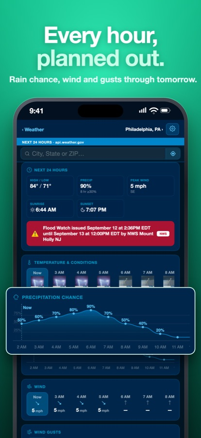

See it before you install it





Read the meteorologist, not an icon
Twice a day, every National Weather Service office publishes an Area Forecast Discussion: the forecaster's own reasoning — what the models disagree on, what they're watching, how confident they are. Most weather apps never show it. This one puts it on the main screen, in full and unedited.
"…could acquire some low-level rotation…potentially resulting in transient low-level mesocyclone features capable of producing a funnel cloud or brief tornado."
That's a real line from a discussion, hours before the storms. It's the difference between "40% chance of storms" and knowing what the storms might do.
Everything the NWS issues, in one place
Straight from NOAA and National Weather Service feeds, credited to the office or station that produced it.
Tornado, storm & severe weather alerts
- Push alerts for NWS warnings, watches and advisories where you are: tornado, severe thunderstorm, flash flood, winter storm, hurricane, heat and more
- Your own severity threshold and quiet hours
- Alert map filterable by warning, watch and advisory
Live Doppler radar
- NOAA RIDGE2 NEXRAD, the feed meteorologists use
- 1, 2 or 3-hour loops with a drag-to-scrub timeline
- Reflectivity, Storm Layer, Storm Tops and Precipitation Type — rain and snow shown separately
- Warning polygons drawn over the storms
Storm Center
- SPC convective outlooks, Marginal through High risk
- SPC mesoscale discussions as they're issued
- 12 raw NWS text products: Hazardous Weather Outlook, Local Storm Reports, winter and fire weather, flood outlooks and more
Satellite
- Animated GOES-East imagery
- GeoColor, Infrared, Visible, Air Mass, Dust and Fire Temperature
- Follow smoke, dust and fire hot spots, not just clouds
Climate & records
- Today against the 1991–2020 normal and the all-time record
- Rainfall and snowfall to date against normal
- Dry streaks counted from the daily records
Forecast & widgets
- 7-day NWS forecast plus a 14-day outlook, clearly marked as model guidance
- Hourly timeline, air quality, UV and full conditions
- Six widget sizes, including three Lock Screen widgets
Who it's for
Storm spotters and chasers, weather hobbyists, farmers, boaters, and anyone who has ever wanted to know why the forecast changed — not just that it did.
Private by design
No account, no ads, no tracking, no analytics. Your location is used to fetch your forecast and is never stored or sold. Read the privacy policy.